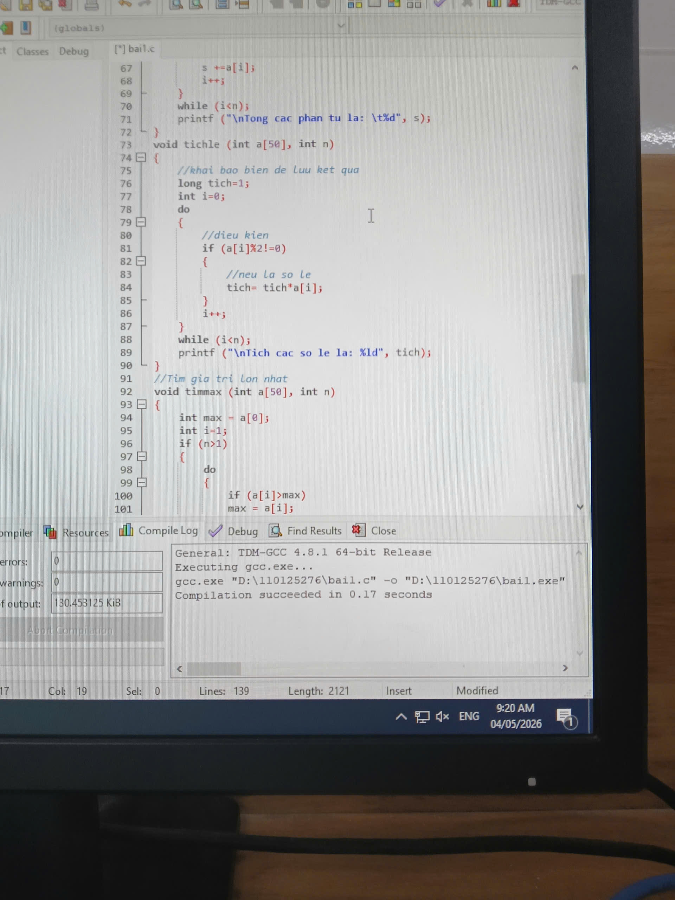

-
Trãi nghiệm
CHIA SẺ
Là một sinh viên ngành công nghệ thông tin em hiểu được việc học lập trình một ngôn ngữ là điều tất yếu. Tuy là môn yêu thích nhưng đôi lúc nó không chỉ gặp khó khăn trong việc sai lỗi nhưng cách tìm lại khó nhọc vô cùng. Dù là thế nên em quyết định không từ bỏ.

Khó khăn trong học tập
Việc học tiếng anh đối với bậc Đại học vô cùng cần thiết nhưng nếu sinh viên không có tính tự giác trong học tập thì sẽ gặp không ít khó khăn dẫn đến việc ảnh hưởng rất nhiều đến ngành công nghệ coonng tin của chúng ta.
